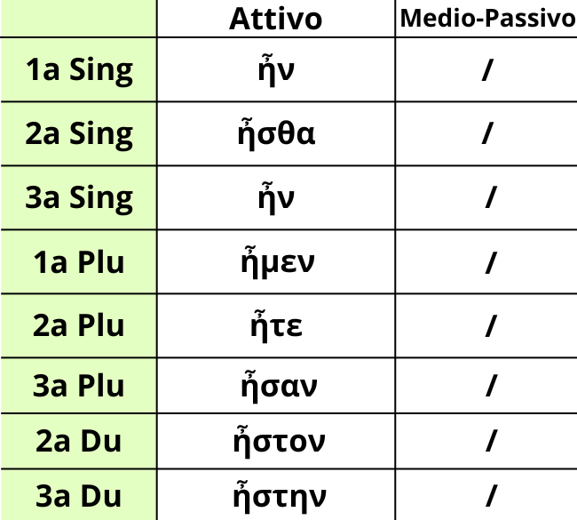

Il verbo ειμί all'imperfetto è un tempo storico del suddetto verbo. Come puoi vedere sembra completamente diverso dal presente di quel verbo, poiché il tema del verbo qui è ησ-.
In ordine da Singolare a Duale è: ἦν, ἦσθα, ἦν, ἦμεν, ἦτε, ἦσαν, ἦστον, ήστην.
Nonostante non sia così immediato, ricordati bene questo tempo del verbo, visto che da ora lo incontrerai un bel po' di volte.